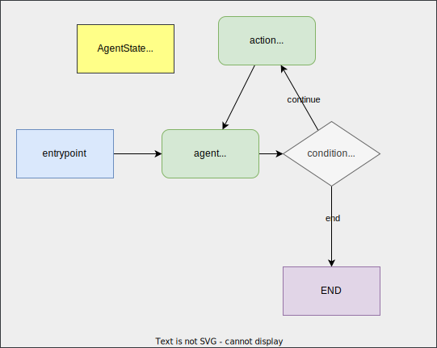
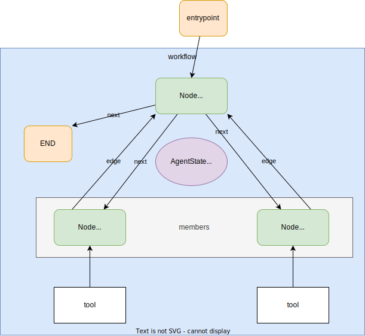

LangGraph
Overview

LangGraph is a library for building stateful, multi-actor applications with LLMs, built on top of (and intended to be used with) LangChain.
When
The main use is for adding cycles to your LLM application. examples:
- if there's an order to execute agents (e.g. get information and then draw a chart)
- AgentState: Defined by
TypedDictwith - StateGraph:
- Node: Agent (call model) or Tool (call tool). Each node returns operations to update that state. These operations can either SET specific attributes on the state (e.g. overwrite the existing values) or ADD to the existing attribute.
- Edge:
- A conditional edge can be defined by
add_conditional_edge - An edge can be defined by
add_edge
- A conditional edge can be defined by
Getting Started
-
Create a tool and
ToolExecutor -
Set up a model and bind tools
-
Define
AgentState -
Define node
Note
node returns
{"messages": [response]}, which is used to updateAgentState.-
Agent:
call_model -
Tool
action:call_tooldef call_tool(state): ... action = ToolInvocation( tool=last_message.additional_kwargs["function_call"]["name"], tool_input=json.loads(last_message.additional_kwargs["function_call"]["arguments"]), ) response = tool_executor.invoke(action) function_message = FunctionMessage(content=str(response), name=action.tool) return {"messages": [function_message]}
-
-
Define graph
-
Create workflow
-
Add nodes
-
Add entrypoint
-
Add Edge
-
Compile
-
-
Use it.
-
Run
{'messages': [HumanMessage(content='what is the weather in sf'), AIMessage(content='', additional_kwargs={'function_call': {'arguments': '{\n "__arg1": "weather in San Francisco"\n}', 'name': 'google-search'}}), FunctionMessage(content="[{'title': '10-Day Weather Forecast for San Francisco, CA - The Weather ...', 'link': 'https://weather.com/weather/tenday/l/San+Francisco+CA+USCA0987:1:US', 'snippet': 'Be prepared with the most accurate 10-day forecast for San Francisco, CA with highs, lows, chance of precipitation from The Weather Channel and Weather.com.'}, {'title': 'San Francisco, CA Weather Forecast | AccuWeather', 'link': 'https://www.accuweather.com/en/us/san-francisco/94103/weather-forecast/347629', 'snippet': 'San Francisco, CA Weather Forecast, with current conditions, wind, air quality, and what to expect for the next 3 days.'}, {'title': '10-Day Weather Forecast for Inverness, CA - The Weather Channel ...', 'link': 'https://weather.com/weather/tenday/l/Inverness+CA?canonicalCityId=61b2ebcaa5e78eebca92d21eaff7a0439eb081e8e60287fca37af4186f8242b7', 'snippet': 'Sun 11 | Night. 40°. 9%. NE 6 mph. Partly cloudy early followed by cloudy skies overnight. Low near 40F. Winds NE at 5 to 10 mph. Humidity97%.'}, {'title': 'San Francisco, CA Weather Conditions | Weather Underground', 'link': 'https://www.wunderground.com/weather/us/ca/san-francisco', 'snippet': 'San Francisco Weather Forecasts. Weather Underground provides local & long-range weather forecasts, weatherreports, maps & tropical weather conditions for\\xa0...'}, {'title': 'Hourly Weather Forecast for San Francisco, CA - The Weather ...', 'link': 'https://weather.com/weather/hourbyhour/l/54f9d8baac32496f6b5497b4bf7a277c3e2e6cc5625de69680e6169e7e38e9a8', 'snippet': 'Hourly Local Weather Forecast, weather conditions, precipitation, dew point, humidity, wind from Weather.com and The Weather Channel.'}]", name='google-search'), AIMessage(content="The weather in San Francisco can vary, but you can check the 10-day weather forecast on The Weather Channel's website [here](https://weather.com/weather/tenday/l/San+Francisco+CA+USCA0987:1:US). You can also find the current weather conditions and forecast on AccuWeather's website [here](https://www.accuweather.com/en/us/san-francisco/94103/weather-forecast/347629).")]}
Examples
Basic Multi-agent Collaboration

Notes
Route next action based on the output of the agent Chart Generator <-> Researcher
Instead of using PythonREPL and TavilySearchResults as tools of a single agent, we use a separate agent for each tool and control the next action with conditional edges.
Inspired by https://github.com/microsoft/autogen
AutoGen: Enabling Next-Gen LLM Applications via Multi-Agent Conversation
- Nodes:
- Agent
Chart Generator(tool:PythonREPL): Call LLM to get the arguments. - Agent
Researcher(tool:TavilySearchResults): Call LLM to get the arguments. - Tool
call_tool: invoke the tool specified in the last message
- Agent
- Edges: Conditional Edge
router- last_message.additional_kwargs contains
function_call->call_tool FINAL_ANSWER->end- Otherwise,
continue
- last_message.additional_kwargs contains
Researcher->{"continue": "Chart Generator", "call_tool": "call_tool", "end": END}Chart Generator->{"continue": "Researcher", "call_tool": "call_tool", "end": END}
Agent Supervisor

Example:

poetry run python src/examples/langgraph_agent_supervisor.py
{'supervisor': {'next': 'Coder'}}
----
Python REPL can execute arbitrary code. Use with caution.
{'Coder': {'messages': [HumanMessage(content='The code `print(\'Hello, World!\')` has been executed, and it printed "Hello, World!" to the terminal.', name='Coder')]}}
----
{'supervisor': {'next': 'FINISH'}}
----
- Coder: https://app.tavily.com/home
Notes
Let LLM to decide which agent to use.
We consider it as 'agent as a tool'. This example is pretty similar to normal Agent with Tools.
- Supervisor agent <-> Agent
- Member agents <-> Tools
# https://github.com/langchain-ai/langgraph/blob/main/examples/multi_agent/agent_supervisor.ipynb
# For this example, you will make an agent to do web research with a search engine, and one agent to create plots. Define the tools they'll use below:
import functools
import operator
from typing import Annotated, Sequence, TypedDict
from langchain.agents import AgentExecutor, create_openai_tools_agent
from langchain_community.tools.tavily_search import TavilySearchResults
from langchain_core.messages import BaseMessage, HumanMessage
from langchain_core.prompts import ChatPromptTemplate, MessagesPlaceholder
from langchain_experimental.tools import PythonREPLTool
from langchain_openai import ChatOpenAI
from langgraph.graph import END, StateGraph
from pydantic import BaseModel
from langchain_core.output_parsers.openai_functions import JsonOutputFunctionsParser
class MemberAgentConfig(BaseModel):
name: str
tools: list
system_prompt: str
def create_member_agents(llm, agent_configs: list[MemberAgentConfig]):
"""Use this function to generate a dictionary of member agents.
If you have AgentExecutor objects, you can use them directly.
"""
agents = {}
for config in agent_configs:
agent = create_agent(llm, config.tools, config.system_prompt)
agents[config.name] = agent
return agents
def create_agent(llm: ChatOpenAI, tools: list, system_prompt: str):
"""Define a helper function below, which make it easier to add new agent worker nodes."""
# Each worker node will be given a name and some tools.
prompt = ChatPromptTemplate.from_messages(
[
(
"system",
system_prompt,
),
MessagesPlaceholder(variable_name="messages"),
MessagesPlaceholder(variable_name="agent_scratchpad"),
]
)
agent = create_openai_tools_agent(llm, tools, prompt)
executor = AgentExecutor(agent=agent, tools=tools)
return executor
def agent_node(state, agent, name):
"""a function that we will use to be the nodes in the graph
- it takes care of converting the agent response to a human message.
This is important because that is how we will add it the global state of the graph"""
result = agent.invoke(state)
return {"messages": [HumanMessage(content=result["output"], name=name)]}
DEFAULT_SUPERVISOR_SYSTEM_PROMPT = """You are a supervisor tasked with managing a conversation between the
following workers: {members}. Given the following user request,
respond with the worker to act next. Each worker will perform a
task and respond with their results and status. When finished,
respond with FINISH."""
def construct_supervisor(llm, agent_member_names: list[str], system_prompt: str = DEFAULT_SUPERVISOR_SYSTEM_PROMPT):
# Our team supervisor is an LLM node. It just picks the next agent to process
# and decides when the work is completed
options = ["FINISH"] + agent_member_names
# Using openai function calling can make output parsing easier for us
function_def = {
"name": "route",
"description": "Select the next role.",
"parameters": {
"title": "routeSchema",
"type": "object",
"properties": {
"next": {
"title": "Next",
"anyOf": [
{"enum": options},
],
}
},
"required": ["next"],
},
}
prompt = ChatPromptTemplate.from_messages(
[
("system", system_prompt),
MessagesPlaceholder(variable_name="messages"),
(
"system",
"Given the conversation above, who should act next?" " Or should we FINISH? Select one of: {options}",
),
]
).partial(options=str(options), members=", ".join(agent_member_names))
supervisor_chain = prompt | llm.bind_functions(functions=[function_def], function_call="route") | JsonOutputFunctionsParser()
return supervisor_chain
# The agent state is the input to each node in the graph
class AgentState(TypedDict):
# The annotation tells the graph that new messages will always
# be added to the current states
messages: Annotated[Sequence[BaseMessage], operator.add]
# The 'next' field indicates where to route to next
next: str
def construct_graph(supervisor_chain, agents: dict[str, AgentExecutor]):
workflow = StateGraph(AgentState)
# supervisor
workflow.add_node("supervisor", supervisor_chain)
# agent members
nodes = {}
for name, agent in agents.items():
node = functools.partial(agent_node, agent=agent, name=name)
nodes[name] = node
# add edges (need to add edges after adding nodes)
for name in agents.keys():
workflow.add_node(name, nodes[name])
# We want our workers to ALWAYS "report back" to the supervisor when done
workflow.add_edge(name, "supervisor")
# The supervisor populates the "next" field in the graph state
# which routes to a node or finishes
conditional_map = {name: name for name in agents.keys()}
conditional_map["FINISH"] = END
workflow.add_conditional_edges("supervisor", lambda x: x["next"], conditional_map)
# Finally, add entrypoint
workflow.set_entry_point("supervisor")
graph = workflow.compile()
return graph
if __name__ == "__main__":
llm = ChatOpenAI(model="gpt-4o-mini")
AGENT_MEMBERS = [
MemberAgentConfig(
name="Researcher",
tools=[TavilySearchResults(max_results=5)],
system_prompt="You are a web researcher.",
),
MemberAgentConfig(
name="Coder",
tools=[PythonREPLTool()],
system_prompt="You may generate safe python code to analyze data and generate charts using matplotlib.",
),
]
supervisor_chain = construct_supervisor(llm, [m.name for m in AGENT_MEMBERS])
agents = create_member_agents(llm, AGENT_MEMBERS)
graph = construct_graph(supervisor_chain, agents)
questions = [
# "Code hello world and print it to the terminal",
"バイデン大統領の年齢は?",
# "Pythonでデータを分析し、matplotlibでプロットを作成してください。",
]
for q in questions:
for s in graph.stream({"messages": [HumanMessage(content=q)]}):
if "__end__" not in s:
print(s)
print("----")
print("finished!")
Hierarchical Agent Teams

Notes
Advanced version of Agent supuervisor with multiple layers of group of agents.
- Supervisor
- Teams
- Agents
Inspired by https://github.com/microsoft/autogen
AutoGen: Enabling Next-Gen LLM Applications via Multi-Agent Conversation
Sample Codes
import operator
from typing import Annotated, Sequence, TypedDict
from langchain_core.messages import BaseMessage, HumanMessage
from langchain_openai import ChatOpenAI
from langgraph.graph import END, StateGraph
from langgraph.prebuilt import ToolNode
from src.libs.tools import TOOL_GOOGLE
def create_example(llm=ChatOpenAI(temperature=0, streaming=True)):
# 1. Set up tools
tools = [
TOOL_GOOGLE,
]
tool_node = ToolNode(tools=tools)
# 3. Bind the tools to the model
llm = llm.bind_tools(tools)
# 4. Define AgentState
class AgentState(TypedDict):
messages: Annotated[Sequence[BaseMessage], operator.add]
# 5. Define nodes
# node: function or runnable (e.g. agent, tool)
# Define the function that determines whether to continue or not
def should_continue(state):
messages = state["messages"]
last_message = messages[-1]
if last_message.tool_calls:
return "continue"
else:
return "end"
# Define the function that calls the model
def call_model(state):
messages = state["messages"]
response = llm.invoke(messages)
# We return a list, because this will get added to the existing list
return {"messages": [response]}
# 6. Define the graph
# Define a new graph
workflow = StateGraph(AgentState)
# Define the two nodes we will cycle between
workflow.add_node("agent", call_model)
workflow.add_node("action", tool_node)
# Set the entrypoint as `agent`
# This means that this node is the first one called
workflow.set_entry_point("agent")
# We now add a conditional edge
workflow.add_conditional_edges(
# First, we define the start node. We use `agent`.
# This means these are the edges taken after the `agent` node is called.
"agent",
# Next, we pass in the function that will determine which node is called next.
should_continue,
# Finally we pass in a mapping.
# The keys are strings, and the values are other nodes.
# END is a special node marking that the graph should finish.
# What will happen is we will call `should_continue`, and then the output of that
# will be matched against the keys in this mapping.
# Based on which one it matches, that node will then be called.
{
# If `tools`, then we call the tool node.
"continue": "action",
# Otherwise we finish.
"end": END,
},
)
# We now add a normal edge from `tools` to `agent`.
# This means that after `tools` is called, `agent` node is called next.
workflow.add_edge("action", "agent")
# Finally, we compile it!
# This compiles it into a LangChain Runnable,
# meaning you can use it as you would any other runnable
app = workflow.compile()
return app
if __name__ == "__main__":
app = create_example()
# 7. Use
inputs = {"messages": [HumanMessage(content="what is the weather in sf")]}
print(app.invoke(inputs))
FAQ
- When to use
LangGraph? - How to determine
AgentState? - llm.bind_functionsとは?
-
LangGraph とStreamlitCallbackHandlerが incompatible? https://github.com/langchain-ai/langgraph/issues/101
2024-03-02 20:48:03.039 Thread 'ThreadPoolExecutor-54_0': missing ScriptRunContext Error in StreamlitCallbackHandler.on_llm_start callback: NoSessionContext() Error in StreamlitCallbackHandler.on_llm_new_token callback: RuntimeError('Current LLMThought is unexpectedly None!') ... Error in StreamlitCallbackHandler.on_llm_new_token callback: RuntimeError('Current LLMThought is unexpectedly None!') Error in StreamlitCallbackHandler.on_llm_new_token callback: RuntimeError('Current LLMThought is unexpectedly None!') Error in StreamlitCallbackHandler.on_llm_new_token callback: RuntimeError('Current LLMThought is unexpectedly None!') Error in StreamlitCallbackHandler.on_llm_end callback: RuntimeError('Current LLMThought is unexpectedly None!') 2024-03-02 20:48:03.659 Thread 'ThreadPoolExecutor-54_0': missing ScriptRunContext Error in StreamlitCallbackHandler.on_llm_start callback: NoSessionContext() Error in StreamlitCallbackHandler.on_llm_end callback: RuntimeError('Current LLMThought is unexpectedly None!')